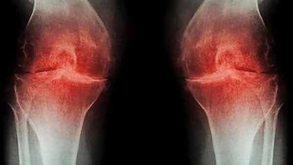

Millions Of Nigerians Suffer From Arthritis and Joint Pains, But This Amazing, Herbal Product Did Something About It Without Doctors, Operations, Or Debilitating Painkillers.
Wednesday, December 8, 2021 | By Oluwakemi Balogun
An estimated 5 million older people in Nigeria suffer from chronic Arthritis, knee pain, and millions more have occasional knee pain. It’s very common. But one consultant, Dr Akin, has found the answer and has helped thousands of Nigerians get rid of Arthritis in the last 10 months.
Let’s meet Danladi Umar
Danladi is a typical 65-year-old. A pretty active middle class life, and a trader with a shop in one of the big markets in Lagos. One thing that wasn’t that typical was his Arthritis and knee pain.
Years of standing and selling took a toll on his knees. “In plain terms, both of my knees hurt. Years of standing took their toll.
My knees hurt more than most of my friends.” Danladi explained. He went to the doctor seeking relief, and left disappointed

“The doctor said there was nothing they could do. He suggested physical therapy, but the nearest one was a thirty minute drive and cost a lot of money, and quite frankly, going three times a week wasn’t appealing.”
Danladi resigned himself to living with it, taking occasional painkillers when it got too bad.But he kept searching online for an answer, hoping for the miracle cure. Little did he know he was about to find it
“I eventually found myself at a website about Arthritis and joint pain, and a bunch of people there were giving awesome news about a new product that helped them get rid of their arthritis because it worked so well.” Danladi remembers
The product was herbal 2-in-1 Arthritis Destroyer marketed by Janis Neutraceuticals.
“I saw these products, and at first didn’t think they were relevant, but then I read more, and it started making sense to me. There seemed to be some real medical science behind this.”
Herbal Meets Muscle
The two most crucial elements of reversing Arthritis And Other Body Pains is…
To build and repair the cartilage tissues naturally around the joints in the body. To increase mobility and make men and women enjoy their old age joyfully instead of experiencing daily excruciating pains With traditional medicine, Arthritis and other painful joints experience will be a lifelong condition.
Traditional medicine “fights” Arthritis through drugs that treat the symptoms and signs of the disease, but never deals with the root cause of the problem.
And this was one thing the Product I read about talked about and addressed.
Danladi Started Applying The Product Daily
So how did Danladi get rid of his Arthritis and Joint Pains? He added the 2-in-1 Arthritis Destroyer Tablet and Cream to his daily routine.
“I started applying the cream everyday for 30 days now, and I never have any pains anymore. It’s the best thing I’ve bought in the last decade, because it’s literally changed my life.”
Before using the 2-in-1 Arthritis Destroyer Product, Umar was thinking about surgery. Now he’s thinking about reactivating his sex life!!


An Alternative To Surgery
The 2-in-1 Arthritis Destroyer contains 2 main products that have been used for a very long time in India and neighboring Asian countries to combat arthritis, joint pains and inflammation.
What's include: Curmin, Indian Frankincense, Vitamin D, Veldt Grape, Wintergreen Oil, Glucosamine

Their formula penetrates deeply into the skin to increase blood flow and force out pain-causing inflammation. Blood provides nutrients to the damaged area to support your body's natural self-healing process relieves pain & inflammation. Activates your body's self-healing mechanisms
The Future Is Here – And It Feels Goooood!
"If you suffer from Arthritis, Joint pains and inflammation, and have tried pretty much everything under the sun… yet nothing gives you lasting relief like me. Try the 2-in-1 Arthritis Destroyer – and I’m so grateful for it." said Danladi.
Note: For a limited time, Boniac x1000 2-in-1 Arthritis Destroyer are available with a 50% off reduction. Get yours now before they run out of stock.
Get 50% OFF Boniac x1000 Today! Get Genuine 2-in-1 Arthritis Destroyer Only At The Official Site
Millions of people Nigerians swear 2-in-1 Arthritis Destroyer work wonders!
comment
Naturally Help Reduce All Types Of Knee Pain

Specifically designed for maximum absorption into the knee so you can feel relief quickly.
Get A Special 50% Off Deal Now Until It's Gone
Your Privacy is Protected
Oluwaseun Yusuf
I've bought this product maybe 4 times already. Almost every member of my family has tried it on. We've all had great results and have felt a lot better after using these. Highly recommend for everyone.
Emmanuel Dada
My knees and waist were sore because of work, and it was uncomfortable to go home at night to sleep in bed. Seeing that my colleague bought this 2-in-1 Arthritis Destroyer, I bought it and tried it. The result was really good. After putting it on my knee, it feels warm and it feels very comfortable. I feel that the medicine has a strong penetration, the pain is relieved a lot, and the knee is not so sore. I will continue to use it.
Abubakar Dauda
I wasn't sure if these would work or not, but wanted to give them a try.
Gideon Okonkwo
I bought these for my wife and she absolutely loves them! They work. They are gross when you take them off but she feels better with every use. I will continue to get these for her
Kareem Adegboola
I truly can say it works. my knee was killing me for weeks, used this product---pain is gone...... worth every penny!!!!